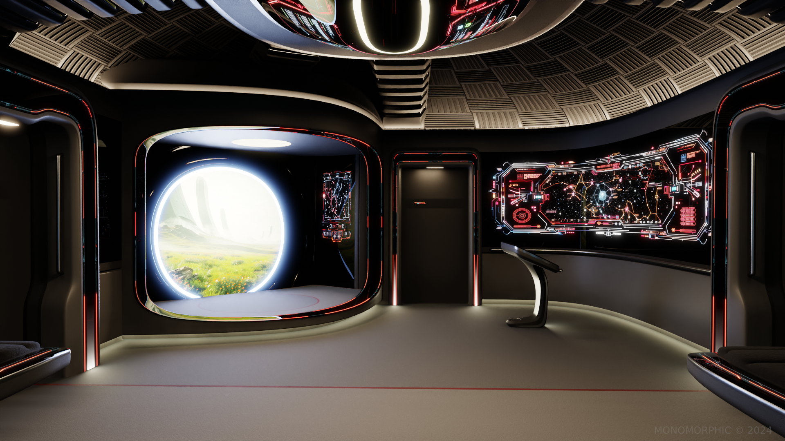

PORTAL TECHNOLOGY
 The Intergalactic Portal Network stands as one of Halcyon's most remarkable technological achievements, providing instant travel capabilities across the vast distances separating member galaxies. Central to this network are colossal portal facilities, exemplified by Gateway Station—an immense megastructure strategically located between planetary bodies, equipped with massive portal generators capable of connecting galaxies across millions of light-years. These stations act as essential transit hubs, supporting the continuous flow of personnel, resources, and information throughout the Halcyon Intergalactic Union.
{kind=link}
Portal technology within Halcyon is versatile, ranging from massive stationary generators to smaller, ship-based portals designed for personnel and equipment transport. Onboard portal rooms found in Halcyon starships provide crucial logistical advantages, enabling immediate deployment to planetary surfaces or between vessels without traditional shuttlecraft or external support.
Among Halcyon's most groundbreaking innovations is a specialized portal traversal maneuver employed by advanced exploration vessels like the Sojourn Class starships. These starships exploit uniquely configured portals, which, while small and lasting only an instant, allow for extraordinary leaps into deep space far beyond traditional operational limits. This technology has initiated a new era of exploration, empowering Halcyon explorers to journey beyond the observable universe and investigate cosmic phenomena previously inaccessible to any known civilization.
The meticulous management of the portal network falls under the watchful oversight of sophisticated AI entities such as Janus, ensuring precision in spatial alignment, timing, and safety. Together, the expansive network and its specialized starships symbolize Halcyon's commitment to pioneering exploration and expanding the boundaries of known space, driven by relentless curiosity and a shared desire to uncover the mysteries of the cosmos.